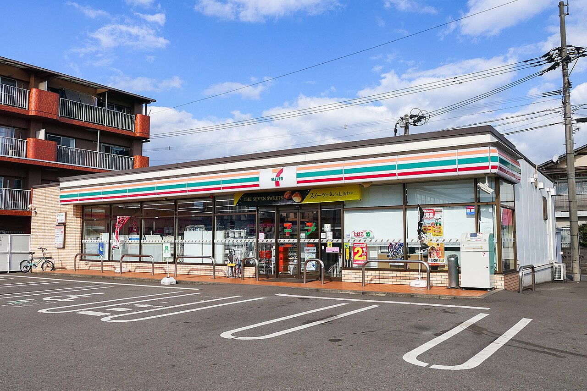
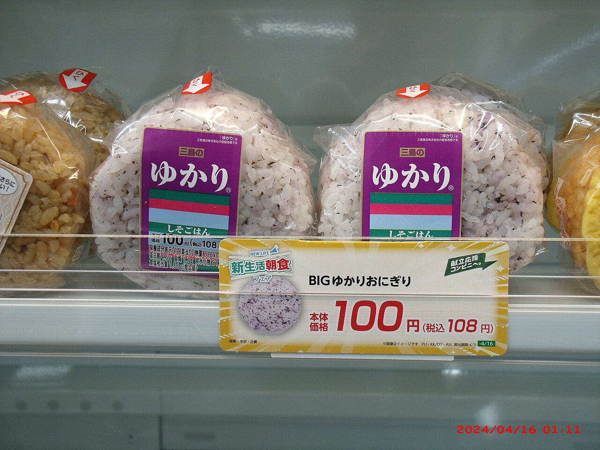
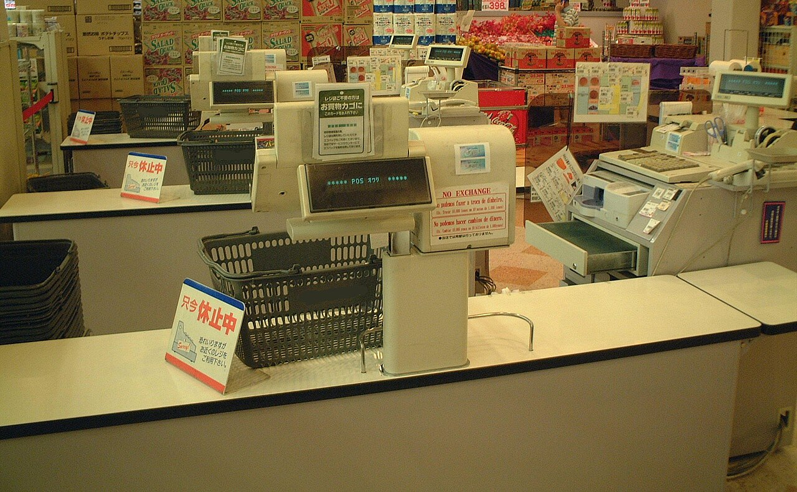
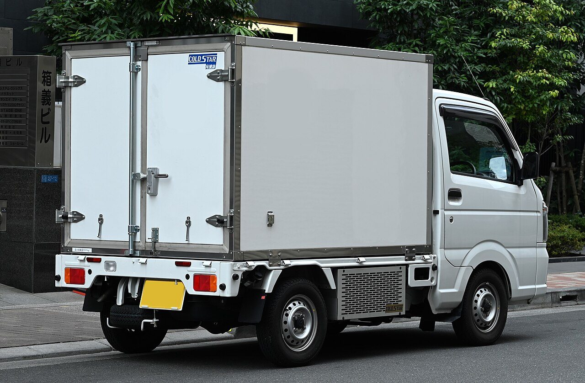
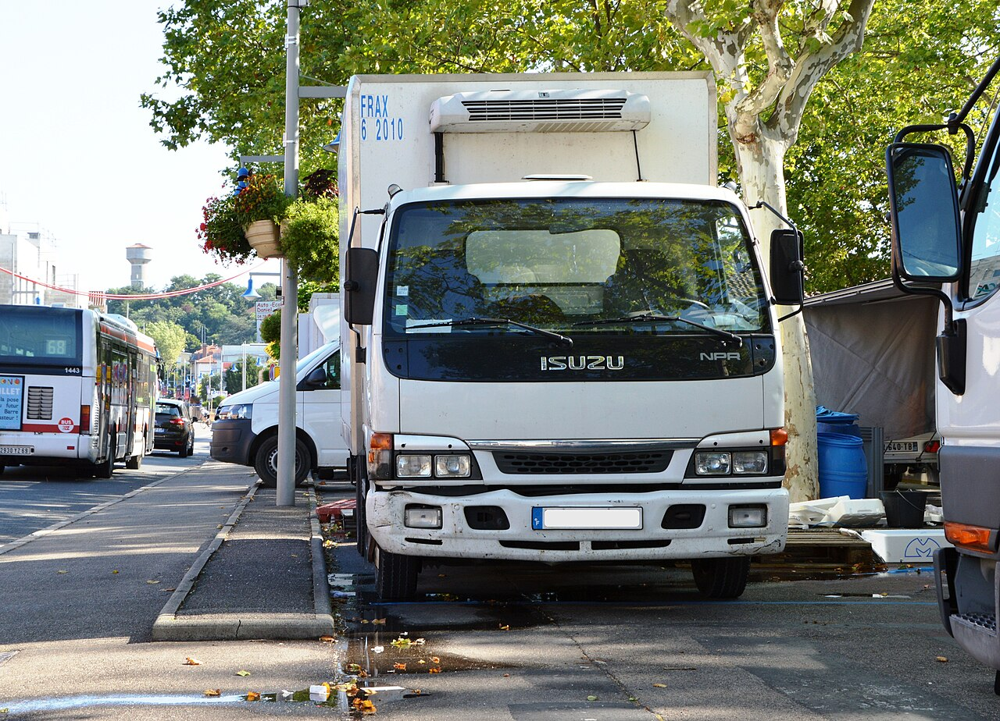
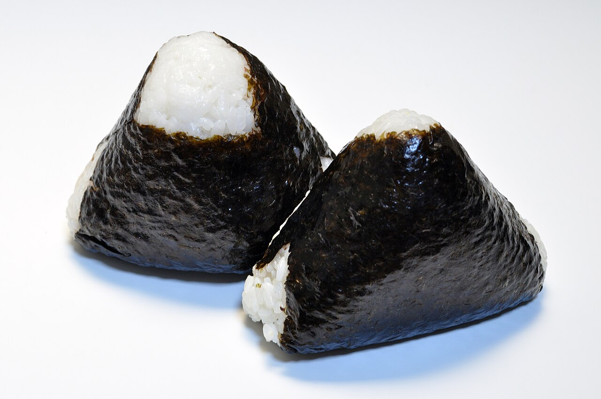
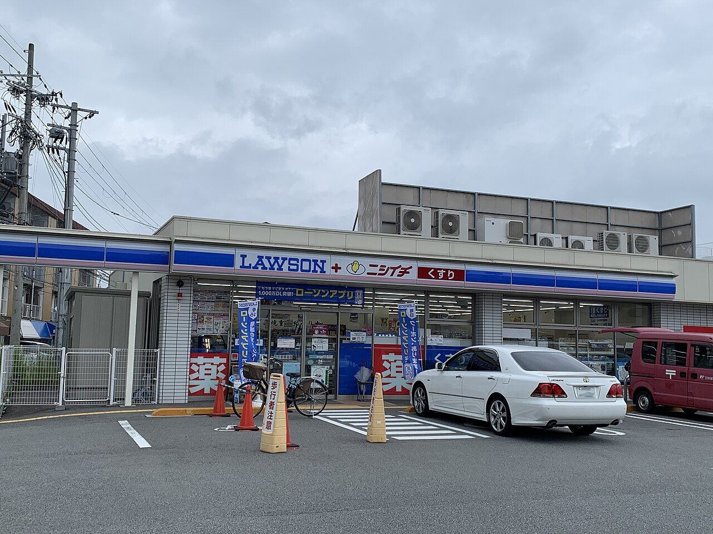
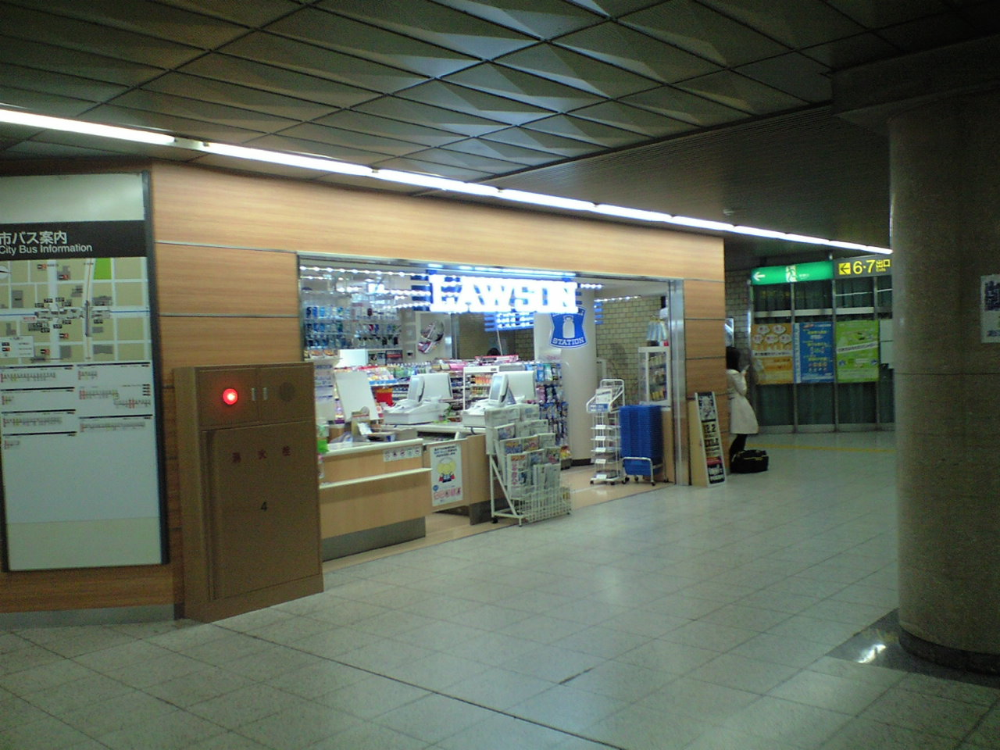

社会・経済 Society & Economyコンビニは、なぜ毎日商品を補充できる？
店の奥に大きな倉庫はないのに、棚にはいつも新しいおにぎりが並んでいます。レジの記録、温度で分けたトラック、そして店の人の「予想」。流れ図とグラフで、毎日の補充のしくみをのぞいてみませんか。
2026.10.21 UP 約5分で読める 文：SOMOSOMO編集部
写真：Seven-Eleven Oita Matsubaramachi Store／MaedaAkihiko（2024年、CC0）
東京・江東区の豊洲に、日本で最初のセブン-イレブンが開店したのは、1974年5月のことです。そのころのコンビニには、1つの店に1日70台ものトラックが商品を届けに来ていたといいます。牛乳はこの会社、パンはあの会社と、メーカーごとにばらばらに運んでいたからです。
それから50年あまり。2025年の終わりには、主要な7社だけで全国に約5万6000店。1つの店には、1日平均で約800人がやってきます。それでも朝も昼も夜も、棚にはたいてい新しいおにぎりが並んでいます。店の奥をのぞいても、大きな倉庫はありません。 では、商品はどうやって毎日ちょうどよく並ぶのでしょうか。
In a word
売れた記録 から次に売れる数を予想し、温度ごとにまとめたトラック で、少しずつ何度も届けているから。
01
No Warehouse
しまう場所がないから、少しずつ何度も届ける
コンビニの売り場の裏には、「バックルーム」と呼ばれる小さな部屋があります。ただ、ここはとても狭く、大量の商品をしまっておくことはできません。業界団体の日本フランチャイズチェーン協会も、店に在庫を多く持てないため、商品を小分けにして届けている と説明しています。
しまっておけないなら、売れる分だけを、売れる前に届ければいい。コンビニが磨いてきたのは、少しずつ、何度も届けるやり方です。ただし、それには「明日、何がどれだけ売れるか」を知る手段が欠かせません。

売り場が、いちばん大きな置き場所 店の奥に置いておける量は多くありません。並べた分が売れたころに、次の分が届くしくみです。写真はイメージです。写真：Yukari Rice Ball ／Mr.ちゅらさん（2024年、CC0）
02
Read the Receipt
レジの「ピッ」が、明日の注文になる
その手がかりが、レジでバーコードを読むときの「ピッ」です。この記録のしくみを「POS（ポス）」といいます。合計の金額だけでなく、いつ・どの商品が・何個売れたか までわかるのが特長です。
POSはアメリカで先に使われていました。それを、売れ筋を見きわめて品ぞろえや注文を決める道具として使ったのは、1982年のセブン-イレブン・ジャパンが世界で初めてだったとされています。

レジは、店の「記録係」 会計のたびに、売れた商品の情報がたまっていきます。写真は日本のお店のレジ（2007年）で、コンビニのものではありません。写真：Cash register Japan ／Kanesue（2007年、パブリックドメイン）
Fig.01 注文と補充は、毎日ぐるぐる回る
売れる レジで「いつ・何が・何個」売れたかが記録される 記録を見る 曜日や時間帯ごとの売れ方が、店ごとにたまっていく 予想して注文する 天気なども考えて、明日売れる数を見積もる 届いて並ぶ 注文した分だけが、小分けにされて店に届く
Every Day
見どころは、4つ目から1つ目へ戻る線。この輪が、毎日ひとまわりします。
記録が教えてくれるのは、あくまで「きのうまで」のことです。明日は雨かもしれません。国土交通省の白書は、こうした天候なども加えて注文を決めるしくみが、品切れと売れ残りの両方を小さくした と説明しています。この記録と注文のしくみが、次に見る共同配送や小分けの配送も生み出しました。
03
The Truck Puzzle
トラックは「会社ごと」から「温度ごと」へ
冒頭の「1日70台」の問題を解いたのが、共同配送です。メーカーごとに運ぶのをやめ、いろいろな会社の商品をいったん「共同配送センター」に集めます。そこで温度の近いものどうしをまとめ、店ごとに仕分けて から、温度ごとのトラックで届けます。
Fig.02 おにぎりが棚に並ぶまで
ORDER 店が注文する 記録と予想から、商品ごとに数を決める MAKE 工場でつくる お弁当やおにぎりは、コンビニ向けの専用の工場でつくられる SORT センターで仕分ける いろいろな会社の商品を、温度ごと・店ごとにまとめる DRIVE トラックが店をまわる 1回の配送で、およそ3〜20店をまわる SHELF 棚に並ぶ 届いた分を並べる。奥にしまえる量は多くない
見どころは「SORT」。ここで会社ごとの荷物が、店ごとの荷物に組みかわります。1回にまわる店の数は、日本フランチャイズチェーン協会の資料（2023年）にある各社の例です。


冷やしたまま、店まで運ぶ 荷台そのものを冷やせる、箱型のトラック。写真はイメージで、コンビニの配送車ではありません。写真：2021 Mazda Scrum KC refrigerator truck rear ／TTTNIS（2025年、CC0）、Isuzu N-Series refrigerated box truck ／Spielvogel（2013年、CC0）
Fig.03 商品は3つの温度に分かれて届く
チルド・米飯 冷蔵の商品と、ごはんもの。お弁当、おにぎり、サンドイッチ、サラダ、乳飲料など。毎日、多い会社では1日3〜4回届く常温 飲み物、お菓子、カップ麺、日用品など。1日1回、週に2〜7日冷凍 アイス、冷凍食品、氷など。1日1回、週に2〜7日
見どころは①の回数。いたみやすい食べ物ほど、何度も少しずつ届きます。ふだんは温度ごとに別のトラックが来ますが、図のように荷台を仕切って一緒に運ぶ場合もあります。回数は日本フランチャイズチェーン協会の資料（2023年）にある主要7社の例で、会社や地域によって違います。

いちばんの常連客は、おにぎり ごはんものはいたみやすく、毎日、何度にも分けて届きます。写真はイメージです。写真：Onigiri 001 ／Ocdp（2020年、CC0）
温度で分けると、商品の性質に合わせて届ける回数を変えられます。いたみやすいお弁当やおにぎりは毎日、何度にも分けて。日もちする飲み物や冷凍食品は、1日1回を週に何日か。こうして、トラックの数をおさえながら、新しさが大事な商品ほど新しいうちに並べられるようになりました。
Fig.04 1つの店に来るトラックの数（1日あたり）
見どころは赤い棒の短さ。共同配送で、トラックは約8分の1になりました。セブン-イレブンの例で、環境省の審議会に出された資料によります。
04
By the Numbers
1日800人を、小さな店で迎える
約800人 1つの店に、1日にやってくる客の数2025年の来店客数（約163億人）と年末の店舗数から計算
3〜4回 お弁当やおにぎりが1日に届く回数（多い会社の例）日本フランチャイズチェーン協会の資料（2023年）
3〜20店 1台のトラックが1回の配送でまわる店の数同上。会社や温度によって違う


街角にも、地下の通路にも 主要7社だけで約5万6000店（2025年末）。駐車場のある店にも、トラックが横づけできない地下の店にも、毎日商品が届きます。写真：Lawson-Nishiichi1 ／JP-28207-3（2020年、CC0）、LAWSON-FushimiMinami ／アレックス（2009年、パブリックドメイン）
Here's the Fun Part
ここが面白い！
コンビニは、少しずつ何度も届けることで、毎日の補充を実現してきました。ところがいま、その回数をあえて減らす動きが始まっています。きっかけは、トラック運転手の働きすぎを防ぐため、働く時間のルールが厳しくなった「物流の2024年問題」です。
日本フランチャイズチェーン協会が2023年にまとめた資料には、各社の取り組みが並んでいます。ローソンは、チルド（冷蔵）とごはんものの配送を1日3回から2回へ 。セブン-イレブンも、一部の地域でチルドとごはんものの便をまとめるとしています。1回に運ぶ量を増やし、トラックを空きの少ない状態で走らせるためです。
回数を減らしても、棚は空けない。そのためには、注文の予想をもっと正確にするしかありません。次にコンビニに行ったら、おにぎりの棚を見てみてください。そこに並ぶ1個は、きのう誰かが立てた「予想」の答えなのです。